Chapter 3 Tests
3.1 Figure with error
library(tidyverse)
library(readxl)data <- read_excel("data/camille/DATABASE_Canopy.xlsx", "All_data_Ind") %>%
separate("Species...1", c("Genus", "Species")) %>%
mutate(SSMleaf = Ptlp_wet - P50leaf,
SSMstem = Ptlp_wet - P50stem) %>%
select(Genus, Species, Ptlp_wet, P50leaf, P50stem, SSMleaf, SSMstem, SegP50,
gmin_leaf, gmin_bark, `Al:As`, SegLSC_leaf, Pmd_18,
PLCleaf_18, PLCstem_18, Mortality) %>%
rename(Ptlp = Ptlp_wet, gmin = gmin_leaf, gbark = gmin_bark,
SegLSC = SegLSC_leaf, Pmd = Pmd_18, PLCleaf = PLCleaf_18,
PLCstem = PLCstem_18, AlAs = `Al:As`) %>%
gather(variable, value, -Genus, -Species) %>%
group_by(Genus, Species, variable) %>%
summarise(median = median(value, na.rm = T), sd = sd(value, na.rm = T)) %>%
mutate(sd = ifelse(is.na(sd), 0, sd)) %>%
gather(metric, value, -Genus, -Species, -variable) %>%
mutate(variable = paste0(variable, "_", metric)) %>%
select(-metric) %>%
pivot_wider(values_from = value, names_from = variable)ggplot(data, aes(P50stem_median, P50leaf_median)) +
geom_smooth(method = lm, color = "darkred", fill = "#000000", se = T) +
geom_abline(linetype = "dashed", size = 0.8) +
geom_point(size = 4, color = "black") +
geom_errorbar(aes(ymin = P50leaf_median - P50leaf_sd,
ymax = P50leaf_median + P50leaf_sd)) +
geom_errorbar(aes(xmin = P50stem_median - P50stem_sd,
xmax = P50stem_median + P50stem_sd)) +
theme_bw() +
theme(panel.grid.major = element_blank(),
panel.grid.minor = element_blank(),
text = element_text(size = 24),
axis.text=element_text(color = "black"),
legend.position = "none") +
scale_x_continuous(limits = c(-8.5,-1), breaks = seq(-8,-1,1)) +
scale_y_continuous(limits = c(-7,-1), breaks = seq(-5,-2,1)) +
ylab(expression(P[paste(50,",",leaf)]~(MPa))) +
xlab (expression(P[paste(50,",",stem)]~(MPa)))ggplot(data, aes(P50stem_median, P50leaf_median)) +
geom_smooth(method = lm, color = "darkred", fill = "#000000", se = T) +
geom_abline(linetype = "dashed", size = 0.8) +
geom_point(size = 4, color = "black") +
geom_errorbar(aes(ymin = P50leaf_median - P50leaf_sd,
ymax = P50leaf_median + P50leaf_sd,
width = 0.2)) +
geom_errorbar(aes(xmin = P50stem_median - P50stem_sd,
xmax = P50stem_median + P50stem_sd,
width = 0.2)) +
theme_bw() +
theme(panel.grid.major = element_blank(),
panel.grid.minor = element_blank(),
text = element_text(size = 24),
axis.text=element_text(color = "black"),
legend.position = "none") +
scale_x_continuous(limits = c(-8.5,-1), breaks = seq(-8,-1,1)) +
scale_y_continuous(limits = c(-7,-1), breaks = seq(-5,-2,1)) +
ylab(expression(P[paste(50,",",leaf)]~(MPa))) +
xlab (expression(P[paste(50,",",stem)]~(MPa)))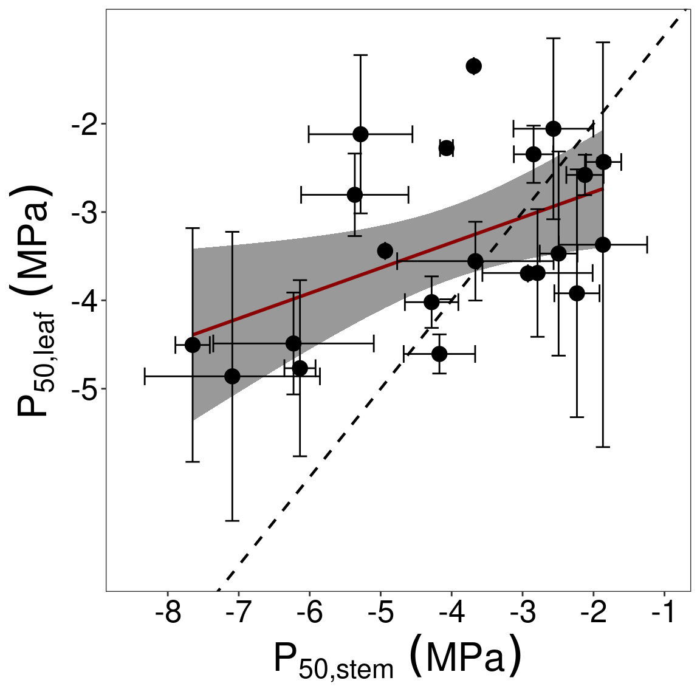
3.2 Old
3.2.1 Data
ind <- readxl::read_excel("data/camille/DATABASE_Canopy.xlsx", "All_data_Ind") %>%
separate("Species...1", c("Genus", "Species")) %>%
filter(!is.na(XUTM)) %>%
mutate(SSMleaf = Ptlp_wet - P50leaf,
SSMstem = Ptlp_wet - P50stem) %>%
select(Genus, Species, Ptlp_wet, P50leaf, P50stem, SSMleaf, SSMstem, SegP50,
gmin_leaf, gmin_bark, `Al:As`, SegLSC_leaf, Pmd_18,
PLCleaf_18, PLCstem_18, Mortality) %>%
rename(Ptlp = Ptlp_wet, gmin = gmin_leaf, gbark = gmin_bark,
SegLSC = SegLSC_leaf, Pmd = Pmd_18, PLCleaf = PLCleaf_18,
PLCstem = PLCstem_18)
indxy <- readxl::read_excel("data/camille/DATABASE_Canopy.xlsx", "All_data_Ind") %>%
filter(!is.na(XUTM)) %>%
st_as_sf(coords = c("XUTM", "YUTM"),
crs = '+proj=utm +zone=22 +datum=WGS84 +units=m +no_defs +ellps=WGS84 +towgs84=0,0,0')
ind$HAND <- raster::extract(raster::raster("data/RelativeElevation_1m.tif"), indxy)
rm(indxy)
agr <- readxl::read_excel("data/camille/DATABASE_Canopy.xlsx", "All_data_Ind") %>%
filter(!is.na(XUTM)) %>%
select("Species...1") %>%
separate("Species...1", c("Genus", "Species")) %>%
left_join(vroom("data/species_growth.tsv"))
ind$AGR <- agr$AGR3.2.2 Normality
ind %>%
gather(variable, value, -Genus, -Species) %>%
na.omit() %>%
ggplot(aes(value)) +
geom_histogram() +
facet_wrap(~ variable, scales = "free") +
ggtitle("Distribution raw")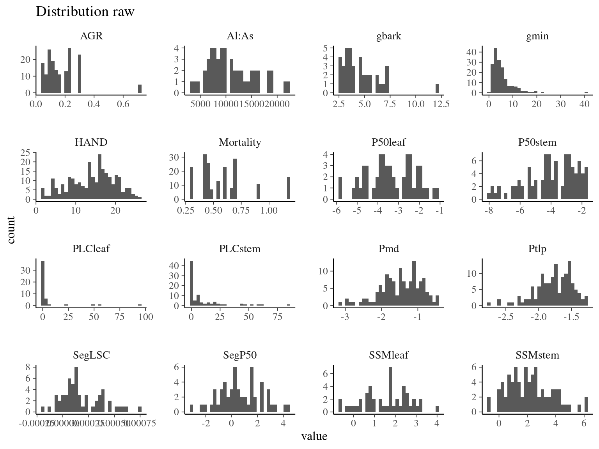
ind %>%
gather(variable, value, -Genus, -Species) %>%
na.omit() %>%
ggplot(aes(log(abs(value)))) +
geom_histogram() +
facet_wrap(~ variable, scales = "free") +
ggtitle("Distribution log and abs transformed")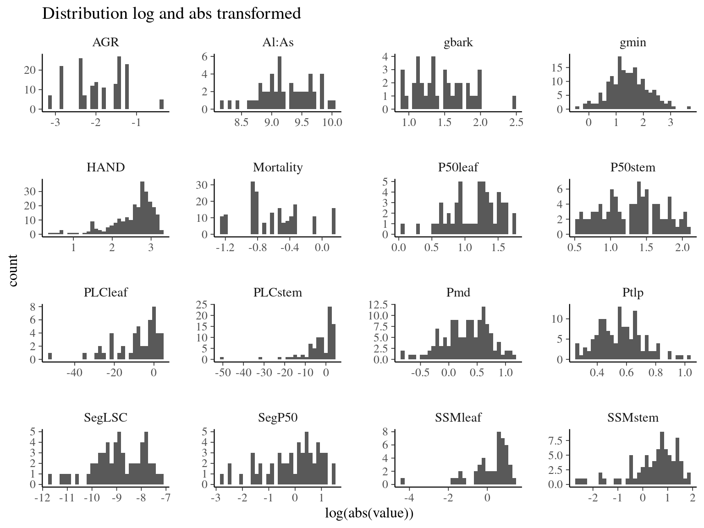
3.2.3 Figure 1
m1 <- lm(P50stem ~ P50leaf, ind)
m2 <- lm(gbark ~ gmin, ind)
m3 <- lm(gbark ~ P50stem, ind)
m4 <- lm(gmin ~ P50leaf, ind)sjPlot::tab_model(m1)| P 50 stem | |||
|---|---|---|---|
| Predictors | Estimates | CI | p |
| (Intercept) | -1.67 | -3.05 – -0.29 | 0.019 |
| P50leaf | 0.69 | 0.30 – 1.08 | 0.001 |
| Observations | 53 | ||
| R2 / R2 adjusted | 0.201 / 0.185 | ||
sjPlot::tab_model(m2)| gbark | |||
|---|---|---|---|
| Predictors | Estimates | CI | p |
| (Intercept) | 3.69 | 2.41 – 4.97 | <0.001 |
| gmin | 0.22 | -0.03 – 0.47 | 0.089 |
| Observations | 37 | ||
| R2 / R2 adjusted | 0.080 / 0.054 | ||
sjPlot::tab_model(m3)| gbark | |||
|---|---|---|---|
| Predictors | Estimates | CI | p |
| (Intercept) | 5.59 | 4.04 – 7.14 | <0.001 |
| P50stem | 0.23 | -0.12 – 0.58 | 0.187 |
| Observations | 37 | ||
| R2 / R2 adjusted | 0.049 / 0.022 | ||
sjPlot::tab_model(m4)| gmin | |||
|---|---|---|---|
| Predictors | Estimates | CI | p |
| (Intercept) | 6.90 | 4.15 – 9.66 | <0.001 |
| P50leaf | 0.56 | -0.23 – 1.34 | 0.161 |
| Observations | 51 | ||
| R2 / R2 adjusted | 0.040 / 0.020 | ||
g1 <- ggplot(ind, aes(P50stem, P50leaf)) +
geom_smooth(method = "lm", formula = y ~ x, col = "red") +
geom_abline(linetype = "dashed") +
geom_point() +
xlab(expression(P[50~stem]~(MPa))) +
ylab(expression(P[50~leaf]~(MPa))) +
ggtitle(paste0("R²=", round(broom::glance(m1)$r.squared, 3),
", p=", round(broom::glance(m1)$p.value, 3)))
g2 <- ggplot(ind, aes(gbark, gmin)) +
geom_abline(linetype = "dashed") +
geom_point() +
ylab(expression(g[min]~(mmol~m^{-2}~s^{-1}))) + ylim(0, 10) +
xlab(expression(g[bark]~(mmol~m^{-2}~s^{-1}))) +
ggtitle(paste0("R²=", round(broom::glance(m2)$r.squared, 3),
", p=", round(broom::glance(m2)$p.value, 3)))
g3 <- ggplot(ind, aes(P50stem, gbark)) +
geom_point() +
xlab(expression(P[50~stem]~(MPa))) +
ylab(expression(g[bark]~(mmol~m^{-2}~s^{-1}))) +
ggtitle(paste0("R²=", round(broom::glance(m3)$r.squared, 3),
", p=", round(broom::glance(m3)$p.value, 3)))
g4 <- ggplot(ind, aes(P50leaf, gmin)) +
geom_point() +
ylab(expression(g[min]~(mmol~m^{-2}~s^{-1}))) + ylim(0, 10) +
xlab(expression(P[50~leaf]~(MPa))) +
ggtitle(paste0("R²=", round(broom::glance(m4)$r.squared, 3),
", p=", round(broom::glance(m4)$p.value, 3)))
(g1 + g2) / (g3 + g4)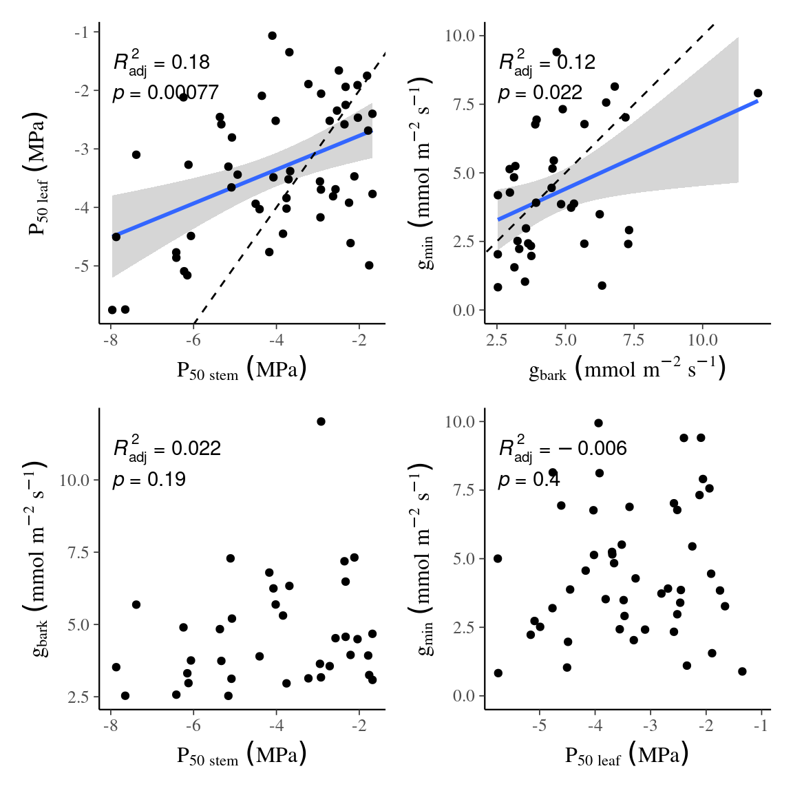
3.2.4 Figure 2
g1 <- ind %>%
select(SSMleaf, SSMstem, SegP50) %>%
gather(variable, value, -SegP50) %>%
na.omit() %>%
ggplot(aes(SegP50, value, col = variable)) +
geom_smooth(method = "lm") +
geom_point() +
scale_color_manual(guide = "none", values = c("darkgreen", "orange")) +
ggpubr::stat_cor(aes(label = paste(..p.label..)), label.y.npc = 0.7) +
ggpubr::stat_regline_equation(aes(label = paste(..adj.rr.label..))) +
xlab(expression(Seg[P50]~(MPa))) +
ylab(expression(SSM[leaf]~or~SSM[stem]~(MPa)))
g2 <- ggplot(ind, aes(SegLSC, gmin)) +
geom_point() +
ggpubr::stat_cor(aes(label = paste(..p.label..)), label.y.npc = 0.8) +
ggpubr::stat_regline_equation(aes(label = paste(..adj.rr.label..))) +
ylab(expression(g[min]~(mmol~m^{-2}~s^{-1}))) + ylim(0, 10) +
xlab(expression(Seg[LSC]~(10^{5}~kg~m^{-1}~Mpa^{-1}~s^{-1})))
g3 <- ind %>%
select(gmin, gbark, `Al:As`) %>%
gather(variable, value, -`Al:As`) %>%
na.omit() %>%
ggplot(aes(value, `Al:As`, col = variable)) +
geom_smooth(method = "lm") +
geom_point() +
scale_color_manual(guide = "none", values = c("darkgreen", "orange")) +
ggpubr::stat_cor(aes(label = paste(..p.label..)), label.y.npc = 0.7) +
ggpubr::stat_regline_equation(aes(label = paste(..adj.rr.label..))) +
ylab("Al:As") +
xlab(expression(g[min]~or~g[bark]~(mmol~m^{-2}~s^{-1})))
g4 <- ind %>%
select(P50leaf, P50stem, `Al:As`) %>%
gather(variable, value, -`Al:As`) %>%
na.omit() %>%
ggplot(aes(value, `Al:As`, col = variable)) +
geom_point() +
scale_color_manual(guide = "none", values = c("darkgreen", "orange")) +
ggpubr::stat_cor(aes(label = paste(..p.label..)), label.y.npc = 0.7) +
ggpubr::stat_regline_equation(aes(label = paste(..adj.rr.label..))) +
ylab("Al:As") +
xlab(expression(P[50~leaf]~or~P[50~stem]~(MPa)))
(g1 + g2) / (g3 + g4)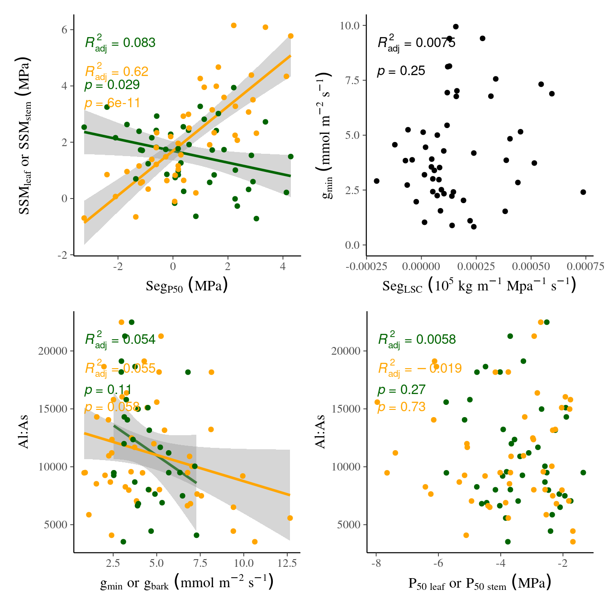
3.2.5 Figure 3
data <- select(ind, PLCstem, P50stem,
SSMstem, SegP50) %>%
na.omit()
m0 <- lm(log(PLCstem) ~ P50stem, data)
m1 <- lm(log(PLCstem) ~ SSMstem, data)
m2 <- lm(log(PLCstem) ~ SegP50, data)
anova(m0, m1, m2)## Analysis of Variance Table
##
## Model 1: log(PLCstem) ~ P50stem
## Model 2: log(PLCstem) ~ SSMstem
## Model 3: log(PLCstem) ~ SegP50
## Res.Df RSS Df Sum of Sq F Pr(>F)
## 1 41 3151.0
## 2 41 3101.8 0 49.22
## 3 41 3485.7 0 -383.893.2.6 Figure 5
data <- ind %>%
rename(AlAs = `Al:As`) %>%
select(HAND, Ptlp, P50leaf, P50stem, gmin, gbark, AlAs) %>%
na.omit()
lm(HAND ~ Ptlp + P50leaf + P50stem + log(gmin) + log(gbark) + log(AlAs), data) %>%
step(trace = F) %>%
sjPlot::tab_model()| HAND | |||
|---|---|---|---|
| Predictors | Estimates | CI | p |
| (Intercept) | 15.09 | 13.13 – 17.06 | <0.001 |
| Observations | 27 | ||
| R2 / R2 adjusted | 0.000 / 0.000 | ||
datag <- data %>%
mutate(gmin = log(gmin), gbark = log(gbark), AlAs = log(AlAs)) %>%
gather(variable, value, -HAND) %>%
na.omit() %>%
mutate(variable_long = recode(variable,
"AlAs" = "log(Al:As)",
"Ptlp" = "P[tlp]~(MPa)",
"P50leaf" = "P[50~leaf]~(MPa)",
"P50stem" = "P[50~stem]~(MPa)",
"gmin" = "log(g[min])~(mmol~m^{-2}~s^{-1})",
"gbark" = "log(g[bark])~(mmol~m^{-2}~s^{-1})"
))
ggplot(datag, aes(HAND, value)) +
geom_point() +
facet_wrap(~ variable_long, scales = "free", labeller = label_parsed) +
ylab("") + xlab("HAND (m)")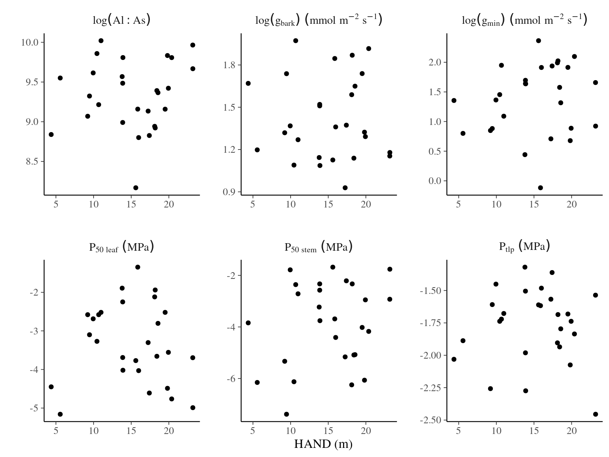
3.2.7 Figure 6
data <- ind %>%
rename(AlAs = `Al:As`) %>%
select(Mortality, Ptlp, P50leaf, P50stem, gmin, gbark, AlAs) %>%
na.omit()
lm(Mortality ~ Ptlp + P50leaf + P50stem + log(gmin) + log(gbark) + log(AlAs), data) %>%
step(trace = F) %>%
sjPlot::tab_model()| Mortality | |||
|---|---|---|---|
| Predictors | Estimates | CI | p |
| (Intercept) | -0.13 | -0.53 – 0.28 | 0.520 |
| P50leaf | -0.05 | -0.11 – 0.01 | 0.109 |
| gmin [log] | 0.09 | -0.03 – 0.21 | 0.136 |
| gbark [log] | 0.27 | 0.04 – 0.51 | 0.025 |
| Observations | 25 | ||
| R2 / R2 adjusted | 0.423 / 0.340 | ||
datag <- data %>%
mutate(gmin = log(gmin), gbark = log(gbark), AlAs = log(AlAs)) %>%
gather(variable, value, -Mortality) %>%
na.omit() %>%
mutate(variable_long = recode(variable,
"AlAs" = "log(Al:As)",
"Ptlp" = "P[tlp]~(MPa)",
"P50leaf" = "P[50~leaf]~(MPa)",
"P50stem" = "P[50~stem]~(MPa)",
"gmin" = "log(g[min])~(mmol~m^{-2}~s^{-1})",
"gbark" = "log(g[bark])~(mmol~m^{-2}~s^{-1})"
))
ggplot(datag, aes(value, Mortality)) +
geom_point() +
facet_wrap(~ variable_long, scales = "free", labeller = label_parsed) +
ylab(expression(Mortality~("%"~year^{-1}))) + xlab("") +
geom_smooth(method = "lm", data = filter(datag, variable %in% c("gbark")))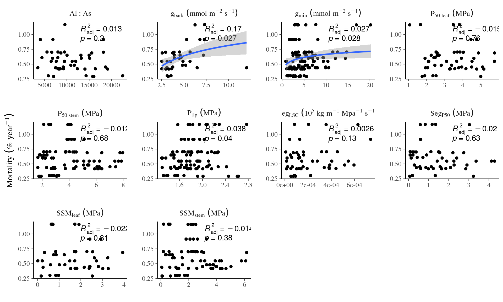
m1 <- lm(Mortality ~ log(gbark), ind)
sjPlot::tab_model(m1)| Mortality | |||
|---|---|---|---|
| Predictors | Estimates | CI | p |
| (Intercept) | 0.23 | -0.04 – 0.50 | 0.088 |
| gbark [log] | 0.25 | 0.07 – 0.43 | 0.007 |
| Observations | 36 | ||
| R2 / R2 adjusted | 0.194 / 0.170 | ||
ggplot(data, aes(Mortality, gbark)) +
geom_smooth(method = "lm", formula = y ~ log(x), col = "red") +
geom_point() +
ylab(expression(Mortality~("%"~year^{-1}))) +
xlab(expression(g[bark]~(mmol~m^{-2}~s^{-1}))) +
ggtitle(paste0("R²=", round(broom::glance(m1)$r.squared, 3),
", p=", round(broom::glance(m1)$p.value, 3)))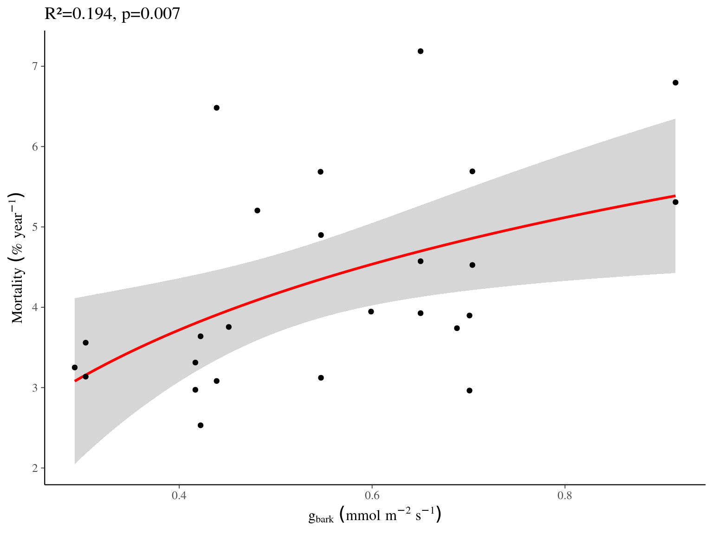
3.2.8 Figure 7
data <- ind %>%
rename(AlAs = `Al:As`) %>%
select(AGR, Ptlp, P50leaf, P50stem, gmin, gbark, AlAs) %>%
na.omit()
lm(log(AGR) ~ Ptlp + P50leaf + P50stem + log(gmin) + log(gbark) + log(AlAs), data) %>%
step(trace = F) %>%
sjPlot::tab_model()datag <- data %>%
mutate(gmin = log(gmin), gbark = log(gbark), AlAs = log(AlAs)) %>%
gather(variable, value, -AGR) %>%
na.omit() %>%
mutate(variable_long = recode(variable,
"AlAs" = "log(Al:As)",
"Ptlp" = "P[tlp]~(MPa)",
"P50leaf" = "P[50~leaf]~(MPa)",
"P50stem" = "P[50~stem]~(MPa)",
"gmin" = "log(g[min])~(mmol~m^{-2}~s^{-1})",
"gbark" = "log(g[bark])~(mmol~m^{-2}~s^{-1})"
))
ggplot(datag, aes(value, AGR)) +
geom_point() +
facet_wrap(~ variable_long, scales = "free", labeller = label_parsed) +
ylab(expression(Annual~growth~rate~("cm"~year^{-1}))) + xlab("") +
scale_y_log10() +
geom_smooth(method = "lm", data = filter(datag, variable %in% c("gbark", "gmin", "P50stem")))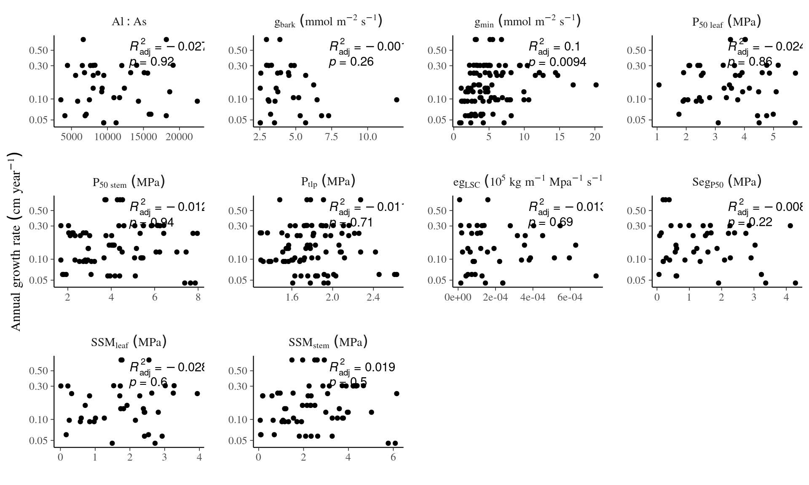
datag2 <- select(data, gbark, gmin, P50stem, AGR) %>%
gather(variable, value, -AGR) %>%
na.omit() %>%
mutate(variable_long = recode(variable,
"P50stem" = "P[50~stem]~(MPa)~~p==0.043",
"gmin" = "log(g[min])~(mmol~m^{-2}~s^{-1})~~p==0.006",
"gbark" = "log(g[bark])~(mmol~m^{-2}~s^{-1})~~p==0.003"
))
ggplot(datag2, aes(value, AGR)) +
geom_point() +
scale_y_log10() +
ylab(expression(Annual~growth~rate~("cm"~year^{-1}))) + xlab("") +
ggtitle("log(AGR) ~ P50 + log(gmin) + log(gbark)", "N=22, R²=0.467") +
facet_wrap(~ variable_long, scales = "free", labeller = label_parsed) +
geom_smooth(method = "lm", formula = y ~ log(x), col = "red",
data = filter(datag2, variable %in% c("gmin", "gbark"))) +
geom_smooth(method = "lm", formula = y ~ x, col = "red",
data = filter(datag2, variable %in% c("P50stem")))3.2.9 Figure S2
ind %>%
select(-Genus, -Species) %>%
cor(use = "pairwise.complete.obs") %>%
corrplot::corrplot(type = "upper",
method = "ellipse",
col = colorRampPalette(c("blue", "white","red"))(100))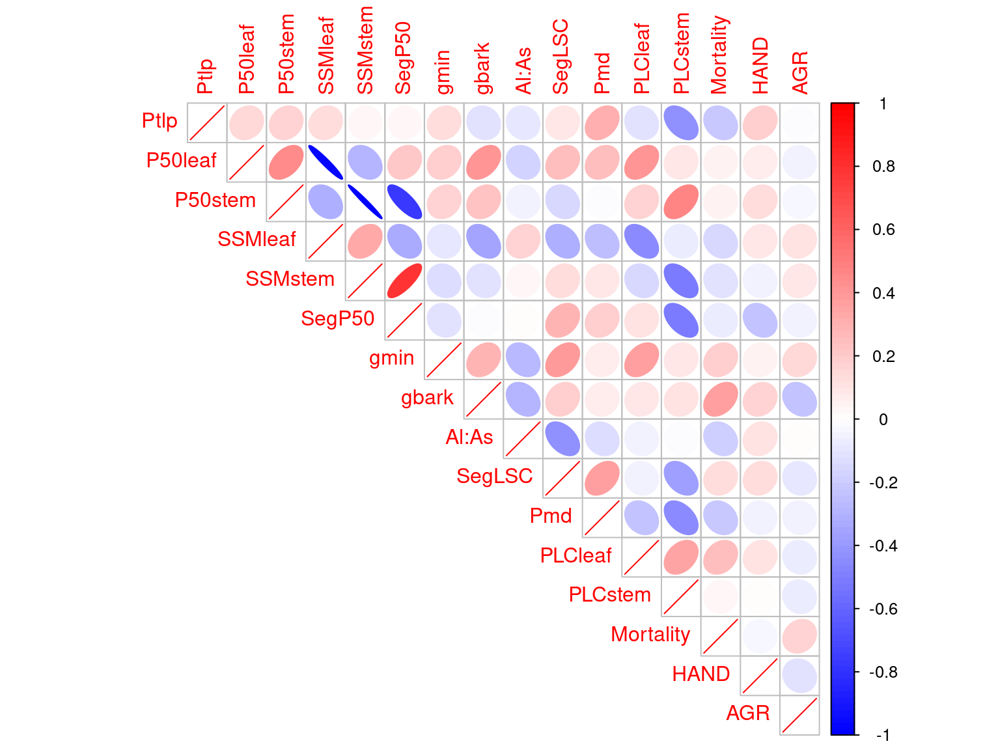
3.2.10 Figure S4
ind %>%
select(Genus, Species, HAND) %>%
group_by(Genus, Species) %>%
mutate(Hmed = median(HAND)) %>%
arrange(Hmed) %>%
mutate(type = "Terra firme") %>%
mutate(type = ifelse(Species %in% c("bidentata", "rosea", "globulifera", "melinonii"),
"Generalist", type)) %>%
mutate(type = ifelse(Species %in% c("falcata", "glabra", "hexapetala", "persistens",
"opacum"),
"Bottomland", type)) %>%
ggplot(aes(reorder(paste(Genus, Species), Hmed), HAND, col = type)) +
geom_boxplot() +
coord_flip() +
xlab("") + ylab("HAND (m)") +
theme(axis.text.y = element_text(face = "italic")) +
scale_color_manual(guide = "none", values = c("green", "orange", "firebrick"))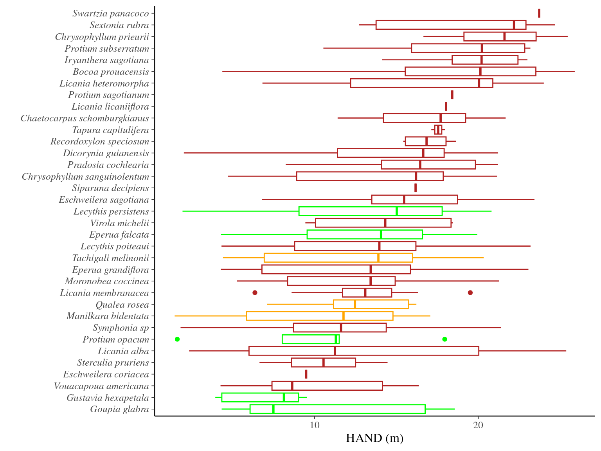